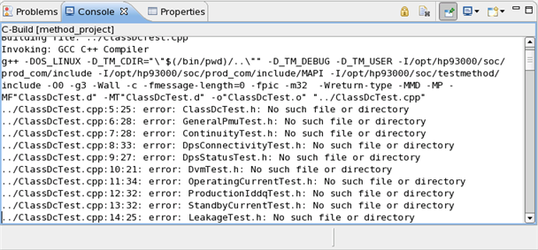
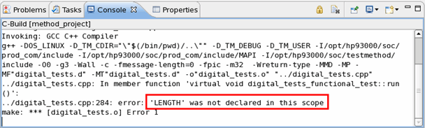
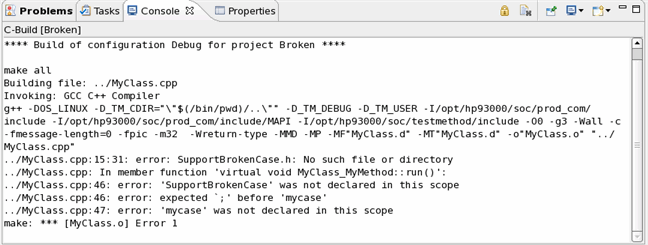

How to convert an incomplete classic test method to a universal test method
Some classic test methods may not be complete. You cannot convert them to universal test methods with the conversion tool and compile the converted UTM project successfully. In this case, you need to do some manual modification to successfully convert them to universal test methods.
About this task
The following cases are covered:
- The classic test method exists in the code (*.cpp file), but it does not exist in the registry (*.dsw file).
- Modifications made to the classic test method source file cause the conversion fail.
- A classic test method source file in the project directory is not listed in the GNUMakefileDBG file.
- Some manual modifications were made in the hidden files of the classic test method project (TMProject.hpp, TMProject.cpp,TMProjectTlb.cpp, TMProject_i.cpp, TMClass.hpp).
- The makefile of the classic test method project (GNUmakefileDBG or GNUmakefileREL) is broken.
Before you begin
Make sure you are using SmarTest 6.3 or later versions.
Procedures
Method exists in the code but not in the registry
When you convert the classic test method project with convertTMProject, you will see a warning message telling the method was not declared in the *.dsw file. The unconverted classic test method will be kept in the UTM source file and no corresponding UTM code will be generated for this test method.
- If you do not need the unconverted test method anymore, remove it before or after conversion.
- Otherwise, in the converted UTM source file, you can manually add a universal test method
class and move the classic test method body code to the
run()function of the universal test method.
Manual modifications to the source code cannot be recognized
This mostly happens when the classic test method was modified manually or the method was commented in the source file and the modifications cannot be recognized by the conversion tool. The conversion tool will send out warning messages. The unconverted test method will be copied to the UTM source file. An empty universal test method template will be created for the test method. You need to
- find the unconverted classic test method code in the source file
- copy the source code to the
run()function of the empty universal test method template. - remove the classic test method code from the UTM source file.
Unused C++ file exists in the classic test method project
This happens when a classic test method source file in the project directory is not listed in the GNUMakefileDBG file. The conversion will work but when you compile the converted UTM projects, you will get some error messages. So you need to remove the unused classic test method source file ahead of conversion.
Manual modification exists in the project hidden files
If you manually modify the class test method project hidden files (TMProject.hpp, TMProject.cpp,TMProjectTlb.cpp, TMProject_i.cpp or TMClass.hpp), for example, by adding some include files and defining some variables, the conversion tool cannot recognize the modifications. These modifications will be ignored during conversion. So you need to
- find a solution to store those modifications (for example, create a header file to contain them)
- convert the classic test method to a universal test method with the conversion tool
- and then add the modifications to the converted UTM files manually (for example, create a header file in the UTM project directory and use it in the test method class source file).
GNUmakefile* is broken
This case happens when GNUmakefileDBG or GNUmakefileREL is broken and they cannot be parsed by the conversion tool. If the conversion tool cannot parse the makefile options correctly, it will only creates the default makefile options (3 compilation include paths: ${HP83000_ROOT}/prod_com/include, ${HP83000_ROOT}/prod_com/include/MAPI, ${HP83000_ROOT}/testmethod/include) of a UTM project. Error messages will be sent out to indicate the errors in GNUmakefileDBG or GNUmakefileREL. The compilation of the converted UTM project may fail. You can correct the errors in GNUmakefileDBG or GNUmakefileREL and convert the project again. Or you can manually add the missing options on C/C++ Build > Settings of the UTM project Properties.
Results
The incomplete or nonstandard classic test methods are successfully converted to universal test methods.
Examples
Description
One example is provided for each case discussed above. The used classic test method project is method_project and the source file is digital_tests.cpp.
Example for method existing in the code but not in the registry
In this
example the test method leakage is in the source file
digital_tests.cpp but not in the registry file
method_project.dsw. When you try to convert the project
method_project, you will get the following
message.
Warning: digital_tests.cpp: HRESULT Cdigital_tests::leakage(DOUBLE vForce_low, DOUBLE vForce_high, DOUBLE settling_time, double _results[4]) this testmethod was not converted probably due to reasons: 1)it was not declared in *.dsw file. 2)its function head definition line was modified. classic testmethod editor also cannot identify and handle this kind of testmethod. please manually do migrate it to new testmethod, otherwise this file cannot be compiled successfully. converting testmethod project...finished.
If
you still need the method Leakage, manually create a UTM
leakage test method class, copy the classic method body code to
run() function and remove the classic test method. Otherwise, remove it before
or after conversion.
Example for manual modification cannot be recognized
A parameter
unit was added to the test method leakage by manually
editing digital_tests.cpp as
below:
HRESULT Cdigital_tests::leakage(DOUBLE vForce_low, DOUBLE vForce_high,
DOUBLE settling_time, STRING unit, double _results[4])When
you try to convert the project method_project, you will get a warning
message like the message in the above example. The classic test method leakage
is copied to the UTM source file. And an empty template will be created in the UTM source file
for leakage. You need to copy the code of leakage from the
classic test method to the run() function of UTM source code and add the
parameter unit to the test method.
Example for unused C++ files in classic test method project
An unused C++ file Test.cpp exists in the method_project directory but is not used by the project. It uses other files which are not in the project directory. When you convert the project method_project to UTM project, the file Test.cpp will be copied to the UTM project directory. When you build the UTM project, you will get the following compilation error messages.

Before the conversion, you need to remove Test.cpp from the method_project directory.
Example for manual modification existing in the project hidden files
Here a macro LENGTH is defined in the project hidden file method_project.cpp as below.
#define LENGTH 10
This macro is used in the test method source file digital_tests.cpp. When you convert the project to UTM, it will be successfully finished. But when you build the UTM project, you will get the error message.

So you need to add the macro LENGTH in the converted UTM source file manually.
Example for GNUMakefile* is broken
In this example, a shared library dependencylib is used in the classic test method project. But the dependencylib project path was not included in the GNUMakefileDBG file by mistake.
TMCPPFLAGS = -I$(HP83000_ROOT)/prod_com/include -I$(HP83000_ROOT)/prod_com/include/MAPI
-I -D_TM_USER "-D_TM_CDIR=\"$$(/bin/pwd)\"" -DOS_LINUX -D_TM_DEBUG -MMDWhen you convert the project, it will be finished with no error message. But when you build the UTM project, you will get the error message as below.

You need to add the dependencylib project path to UTM project .
What to do next
Check the converted universal test method project.
Import the converted universal test method project and build it.
Functional changes
- Introduced before SmarTest 6.3.2